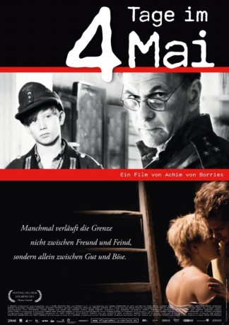
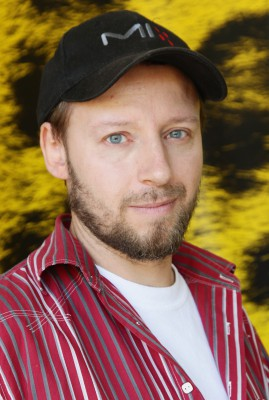
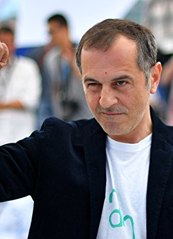

#5938 4 Tage im Mai
Alternativ: 4 Days in May (Originaltitel)
 
 IMDB-Wertung: 6.3 / 10
IMDB-Wertung: 6.3 / 10  Metascore: 0
Metascore: 0 
4 Tage im Mai erzählt von der Begegnung eines sowjetischen Spähtrupps mit einer Kampftruppe der Wehrmacht am Ende des Zweiten Weltkriegs. In einem abgelegenen Waisenheim an der Ostseeküste haben noch einige Kinder Zuflucht gefunden. Unter ihnen auch der vom deutschen Endsieg überzeugte 13-jährige Peter der zwischen Russen und Deutschen übersetzen kann. Als die sowjetischen Hauptstreitkräfte eintreffen, müssen die Kommandanten auf beiden Seiten eine Entscheidung treffen.
Jahr: 2011
Dauer: 88 Minuten
FSK: 12
Land: Deutschland Studio: Warner Home VideoTonspuren:
Untertitel:
Auflösung: 720p (1280x542) Größe: 2785 MB
Genre: Drama, Krieg
Regisseur: Achim von Borries
Drehbuch: Jim Burnstein
Soundtrack:
Darsteller:
- Aleksey Guskov als Hauptmann
-  Ivan Shvedoff als Trubizin
- Andrey Merzlikin als Sedych
 Grigoriy Dobrygin als Fedjunin
Grigoriy Dobrygin als Fedjunin- Angelina Häntsch als Anna
- Vladimir Svirskiy als Wladimir
- Pavel Wenzel als Peter
- Sergey Legostaev als Iwanov
- Maksim Kowalewski als Fradkin
- Gertrud Roll als Baronin Maria
- Petra Kelling als Köchin Luise
-  Merab Ninidze als Major
- Alexander Held als Oberstleutnant Wald
 Martin Brambach als Oberleutnant Wendt
Martin Brambach als Oberleutnant Wendt- Veit Stübner als Kapitän
- Sylke Langenbeck als Vera
- Julius Nitschkoff als Der junge Soldat
- Samuel Koch als Soldier
- Thomas Schunke als Father
- Yevgeni Sitokhin als Sergei
Datei: X:\2011(A-F)\4 Tage im Mai (2011, FSK12, 1280x542).mkv seit 07.04.2017
Festplatte: HD 2010(G-Z)-2011(A-F)
 Es gibt insgesamt 86 Filme in der Gruppe '2011(A-F)'
Es gibt insgesamt 86 Filme in der Gruppe '2011(A-F)'